Обзор
В этом разделе руководства рассказывается, как настроить анимированный трансформируйте сцену целей/блендшейпов в 3dsMax и поместите их в CRYENGINE. Термины «blendshape» и «morph target» взаимозаменяемы, поскольку в 3dsMax/Maya/modo и т. д. они называются по-разному. В этом разделе мы стараемся избегать термина blendshapes, поскольку как пользователи 3dsMax, вы будете более знакомы с целями морфинга.
В этом руководстве может использоваться бесплатный пример проекта GameSDK. Мы рекомендуем вам скачать это с База данных активов, импортируйте его в программу запуска, запустите оттуда, а затем создайте новый уровень.
См. эта страница чтобы узнать, как импортировать проект в программу запуска. (Папка по умолчанию для образца проекта GameSDK при загрузке: C:\Program Files (x86)\Crytek\CRYENGINE Launcher\Crytek\gamesdk_<XXX>\GameSDK)
Учебные файлы
Исходные сцены 3dsMax с экспортированными файлами CRYENGINE:
sdk_blendshape_max_tutorial.zip (8.6 MB) (Извлеките его в папку «Ресурсы» в папке GameSDK. Местоположение этой папки по умолчанию указано выше.)
Начиная с версии движка 5.6, список скелетов больше не используется, поэтому вы можете игнорируйте любые ссылки на него на остальной части страницы.
Предварительные требования для этого урока
Папка проекта установлена в <GameSDK folder (see above)>\Objects\tutorial\animated_blendshape_tutorial\max.
Пожалуйста, примите это во внимание, если вы хотите использовать другое местоположение проекта, но всегда оставайтесь в папке проекта при сохранении исходных файлов проекта 3dsMax.
Прежде чем продолжить изучение этого руководства, убедитесь, что вы прочитали и поняли следующее:
- Как установить CryMaxTools
- Базовая настройка и экспорт активов — 3ds Max
- CRYENGINE Экспортер
- Масштаб единиц измерения 3dsMax соответствует системе единиц измерения CRYENGINE.
Полезная информация о модификаторе 3dsMax «Морфер» в сочетании с CRYENGINE:
Если вы просто хотите иметь неанимированный цели морфинга, доступные в ваших персонажах CRYENGINE, вы можете экспортировать своего персонажа в формате CRYENGINE *.skin. Все, что вам нужно, — это стандартный 3dsMax «Морфер», вставленный перед модификатором «Скин».
Уменьшите пороговое значение целевой позиции морфинга в параметрах экспорта до 0,001 или ниже, если вы получаете плохие цели морфинга. Это будет заставить Экспортер включать даже минимально смещенные вершины.
Рис. 1: Опция экспорта цели морфинга в 3dsMax
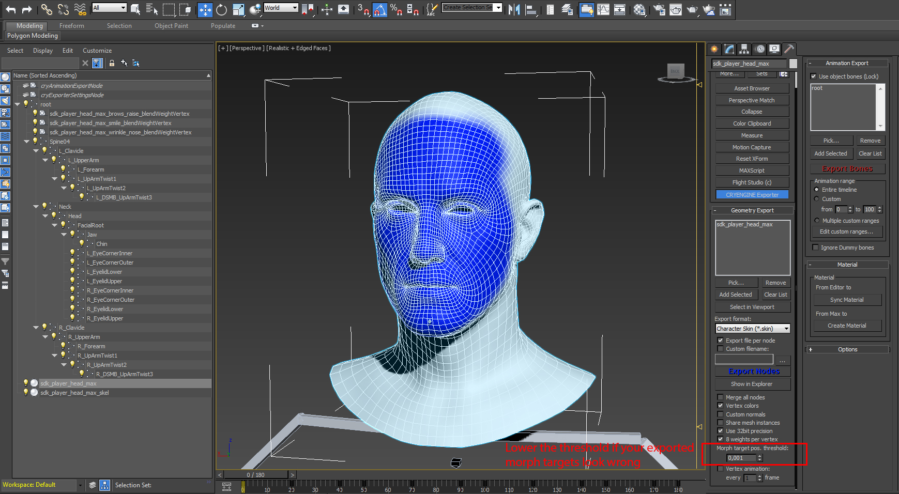
Вершины синего цвета помечены как CRYENGINE для обновления этих нормалей вершин, когда цели морфинга смешиваются в дополнение к деформации кожи.
3dsMax Модификатор «Морфер» ограничен 100 целями морфинга. Если вы собираетесь использовать больше, вам необходимо добавить цель морфинга, которая также имеет модификатор «Морфер» с номером цели морфинга. 100 - нет. 199, к вашей базовой сетке. Примените ту же процедуру к следующим 100 морфам и т. д.
Сохраняйте имена ваших целевых сеток морфинга уникальными и разумными. Если вы измените их имена после настройки узлов Morpher и «*_blendWeightVertex» (которые будут объяснены позже в этом руководстве), вам придется перестроить узлы. Узлы "*_blendWeightVertex".
У вас должен быть связанный скелет и модификатор «Skin», чтобы иметь возможность добавлять анимированные цели морфинга/формы смешивания в CRYENGINE.
Вам также необходимо создать скелетную треугольную сетку для CRYENGINE. *.CHR файл и привязать его к костному узлу, который находится на вершине иерархии деформации, в нашем случае к кости «Spine04».
Ваш модификатор «Морфер» обычно вставляется между базовым объектом-сеткой и модификатором «Скин», при этом «Скин» находится поверх стека модификаторов.
Вам разрешено удалять цели морфинга после того, как вы добавили их в модификатор Morpher. В отличие от конвейера экспорта Maya, цели морфинга не нужны для экспорта с 3dsMax на CRYENGINE.
Вы должны быть осторожны с преобразованиями перемещения/вращения/масштабирования в вашей базовой сетке. Сбросьте XForm и сверните стек модификаторов вашей базовой сетки перед скиннингом и созданием морфов.
Сохраняйте максимальное количество влияния до 8! Ради производительности оставьте значение 4.
CPU/Программное обеспечение скининга поддерживает 8 весов для каждой вершины и морфинг целей/форм смешивания.
GPU Поддержка скиннинга поддерживает 8 весов на вершину, но не поддерживает цели морфинга/формы смешивания.
Настройте свой контент в 3dsMax
В этом уроке мы предоставляем голову «sdk player» CRYENGINE с целями морфинга. Поэтому нам нужно только собрать все воедино и подготовить сцену 3dsMax к экспорту в CRYENGINE.
- В обучающей сцене базовая сетка головы уже была привязана к предоставленному скелету (кости позвоночника, шеи, головы, челюсти и т. д.). Цель морфинга не была подключена в Морфер модификатор еще.
Если вы хотите воссоздать этапы снятия шкур. Кость «Spine04» — это кость кожи верхнего уровня, которую можно добавить в список деформируемых костей. Кожа модификатор. Поэтому, пожалуйста, не добавляйте «корневой» костный узел в Кожа или CrySkin если хочешь.
Пожалуйста, откройте максимальный файл стартовой сцены: animated_blendshape_tutorial_start.maxPic2a: сцена 3dsMax с геометрией головы, преобразованной в скелет.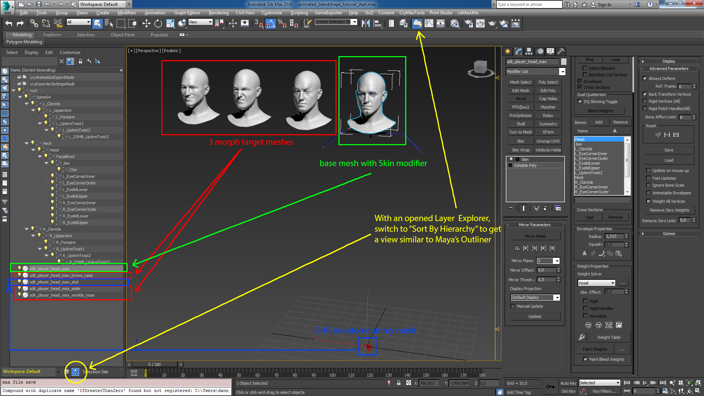
- Мы добавим Морфер модификатор нашей базовой сетки и включите в нее три предоставленные цели морфинга. Имейте в виду, что вы вставляете Морфер перед Кожа модификатор. Пожалуйста, проверьте три канала морфинга, чтобы убедиться, что они правильно подключены к трем целям морфинга.
Посмотрите результат в файле сцены: animated_blendshape_tutorial_mid01.max
Рис.3: Добавьте 3 целевые сетки морфинга к модификатору Morpher.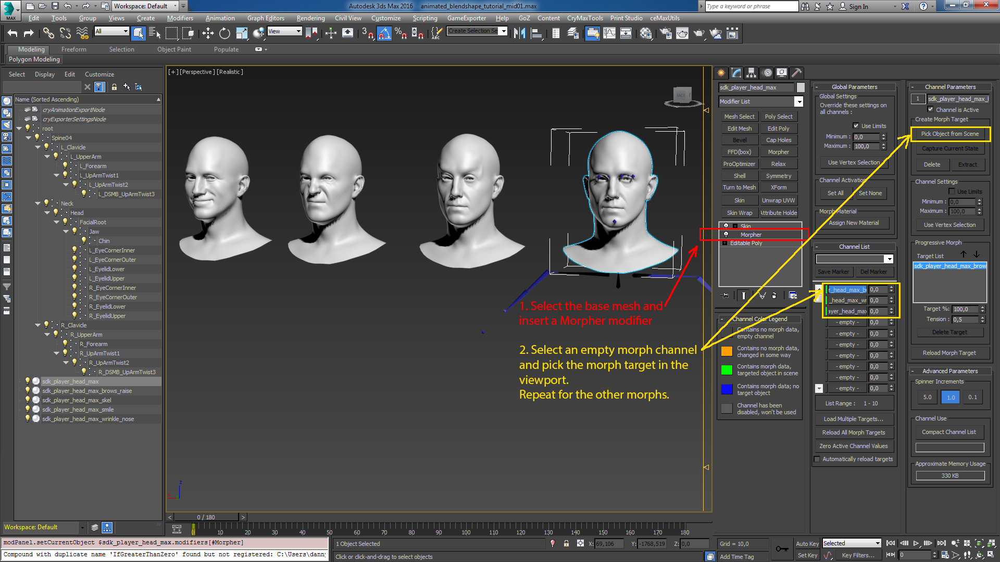
- Прежде чем перейти к анимации, мы покажем вам, как настроить фиктивную треугольную сетку для скелета CHR. Этот файл *.CHR необходим для системы вложений CRYENGINE. Мы можем использовать морфинговые цели/блендформы только с форматом файлов CRYENGINE *.SKIN. Файл *.SKIN всегда является вложением. Это означает, что нам нужно создать CHR только из скелета. Для этого скелета нам нужен простой объект-сетка, который содержит всю информацию об иерархии скелета, — объект-сетка треугольника.
Рис.4: Создана треугольная сетка CHR для скелета.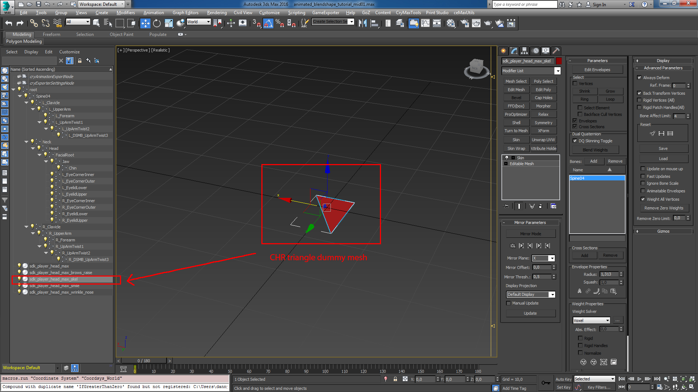
- Возможно, вы заметили фиктивную треугольную сетку под названием «sdk_player_head_max_skel» в сцене 3dsMax. Эта треугольная сетка имеет Кожа модификатор добавлен только с костью «Spine04», добавленной в его список костей. CRYENGINE извлечет данные иерархии из этого фрагмента треугольной сетки со шкурой, когда вы экспортируете его в файл *.CHR.
Рис5: CHR манекен-скелет с модификатором Skin.
Добавьте узлы «blendWeightVertex» для анимации.
Как уже упоминалось, если вы хотите иметь неанимированный трансформируйте цели/формы смешивания с помощью персонажей CRYENGINE, вам больше не нужно выполнять действия, описанные в этом разделе. Экспортируйте фиктивную треугольную сетку как файл скелета *.CHR, а сетку sdk_player_head — как файл *.SKIN. Кроме того, проверьте пороговое значение целевой позиции морфинга в параметрах экспорта от Max до CRYENGINE.
Мы рассмотрим каждый шаг, необходимый для настройки рабочего узла «blendWeightVertex» с помощью «Подключения параметров», а также предоставим MaxScript для автоматизации этого процесса.
Этот шаг не является обязательным: Oкак только вы настроите Морфер с помощью его целей морфинга вы можете скрыть или даже удалить модели морфинга, которые вы смоделировали.
По умолчанию морф-каналы Морфер модификатор устанавливается в диапазоне [0..100] процентов. Оставьте все как есть, поскольку CRYENGINE ожидает значений от 0 до 100.
Для каждого анимированного канала морфинга вы должны создать узел с именем <BLENDSHAPE_MESH_NAME> + "_blendWeightVertex", например. "sdk_player_head_brows_raise_blendWeightVertex". Узлы "blendWeightVertex" затем становятся родительскими в корневом узле скелетной иерархии.
Рис6а: Создайте узел «Point Helper» в 3dsMax и переименуйте его, следуя соглашению об именах.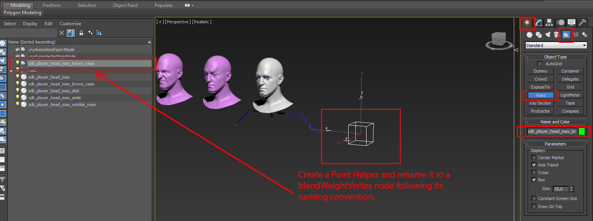
После создания узлов "blendWeightVertex" вам необходимо использовать 3dsMax' ".Параметр провода" функция для сопоставления значений каждого канала морфинга для управления "Position_X" соответствующего "blendWeightVertex" узел. Следующие изображения ниже покажут вам, что нужно подключить в этом процессе:
Pic6b: Начальный параметр. Соединение базовой сетки с помощью Morpher со вспомогательным узлом "blendWeightVertex".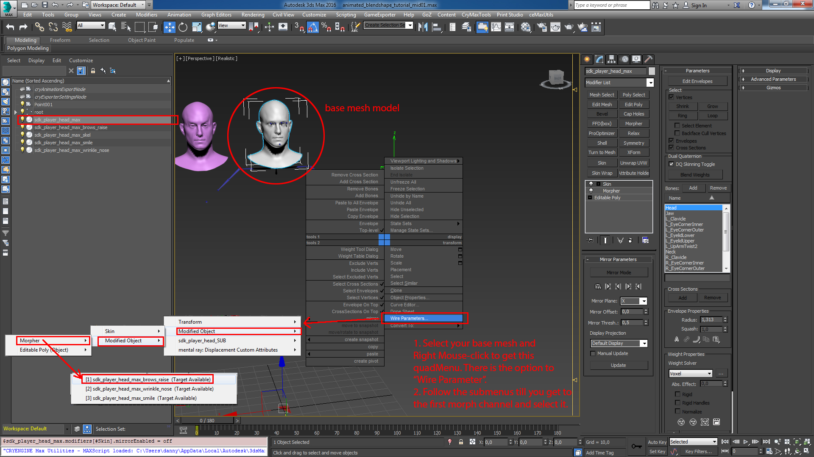
Рис6c: Продолжите подключение параметров, чтобы подключить канал морфинга к «Позиции X» узла «blendWeightVertex».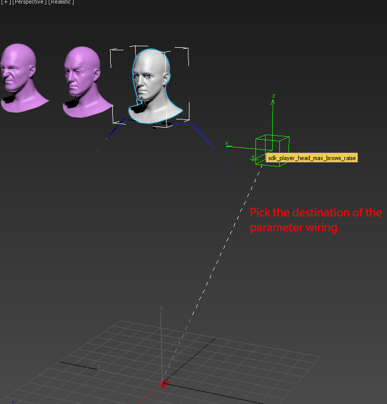
Pic6d: Выберите путь назначения соединения.
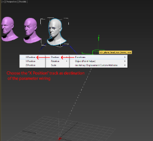
Рис.6e: Завершение направления управления процессом подключения параметров.
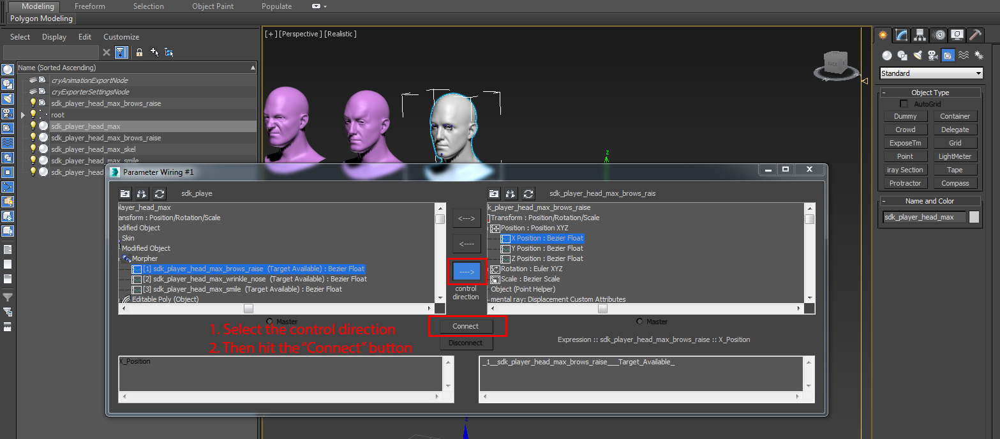
Вместо того, чтобы вручную создавать вспомогательные узлы, мы предоставляем MaxScript ниже для настройки. Все, что вам нужно изменить, это имя узла базовой сетки и корень вашей установки, если у вас другая сцена морфинга/формы смешивания.
-- Delete any existing "*_blendWeightVertex" nodes you may have before re-running the script! function ceCreateBlendWeightVertex argBaseMesh argRigRoot = ( clearListener() morphMod = undefined hasMorpher = False numMods = argBaseMesh.modifiers.count currModNum = numMods morphModStackNumber = undefined blendWeightVertexList = #() listOf_ID_MorphName_Helper = #() while ( (not hasMorpher) OR (currModNum > 0) ) do ( if ( classOf argBaseMesh.modifiers[currModNum] == Morpher ) then ( hasMorpher = True morphMod = argBaseMesh.modifiers[currModNum] morphModStackNumber = currModNum ) currModNum -= 1 ) if ( hasMorpher ) then ( for n = 1 to 100 do ( if ( (WM3_MC_HasData morphMod n) ) then ( currChannelName = WM3_MC_GetName morphMod n format ("\nMorph Target Channel Name: %") currChannelName newPoint = Point size:15.0 axistripod:True cross:False box:True wirecolor:orange name:( currChannelName + "_blendWeightVertex") newPoint.parent = argRigRoot append blendWeightVertexList newPoint fromSrc = argBaseMesh.modifiers[morphModStackNumber][n] toTgt = newPoint.position.controller[1] myStr = substituteString (fromSrc as string) "SubAnim:" "" expr = myStr + "_" paramWire.connect fromSrc toTgt expr format ("\nParameters wired from % to %\n") fromSrc toTgt tmpList = #(n, currChannelName, newPoint) append listOf_ID_MorphName_Helper tmpList ) ) ) else ( messageBox ( "WARNING: Your base mesh object DOES NOT have a Morpher modifier. No \"_blendWeightVertex\" nodes created." ) ) select blendWeightVertexList max zoomext sel format "\n" listOf_ID_MorphName_Helper ) --ceCreateBlendWeightVertex $sdk_player_head_max $rootВставьте сценарий на вкладку редактора сценариев 3dsMax и выполните его один раз. Эта функция теперь находится в памяти. Запустите команду:
сeCreateBlendWeightVertex $sdk_player_head_max $root
Если вы решите использовать другую сетку головы, не забудьте заменить $sdk_player_head_max и $корень с вашей сеткой со шкурой и именем корневого узла с префиксом знака доллара $, как вы видели в обозначениях в нашем примере.
Вы также можете «раскомментировать» последнюю строку кода, удалив double тире «--» и r.снова откройте сценарий (CTRL+E в редакторе MaxScript).
Все вспомогательные узлы «*_blendWeightVertex» должны находиться внутри скелетной иерархии. Если вы не используете этот скрипт, не забудьте связать его с корневым узлом вашей установки.
Наконец, вы можете добавить анимацию морфинга цели/формы смешивания. Вы заметите, что суставы «blendWeightVertex» движутся при прокрутке временной шкалы, когда вы анимировали три канала морфинга.
Рис.6: Созданы и «подключены к параметрам» узлы «blendWeightVertex» к каналам морфинга.
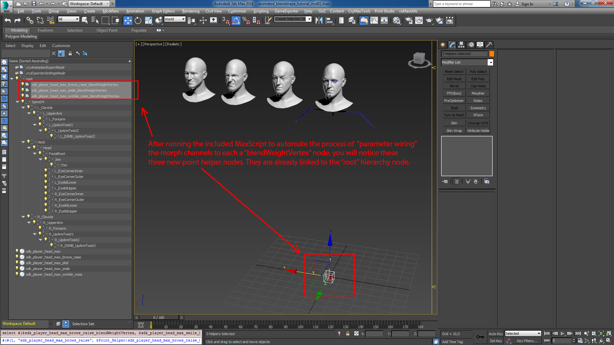
Для получения результатов откройте сцену: animated_blendshape_tutorial_mid02.max
Добавьте анимацию в Морфер
Мы сохраним его short и предоставим вам возможность ознакомиться с документацией/руководствами Autodesk 3dsMax о том, как создавать анимацию.
Вот шаги в short:
- Нажмите кнопку 3dsMax «Анимировать», окно 3D-просмотра будет обрамлено красной рамкой.
- Перейдите к модификатору Morpher, прокрутите временную шкалу, измените значения канала морфинга.
- Поверните некоторые кости, чтобы получить как скелетную, так и морфовую анимацию.
- Когда вы закончите анимацию, вы готовы экспортировать ресурсы.
Или вы можете открыть эту анимированную сцену: animated_blendshape_tutorial_mid03.max
Некоторые подводные камни при использовании Morph Targets:
- Меши, для которых будет снят скин и построены цели морфинга, должны иметь чистые преобразования («Сброс Xform» и стек модификаторов свертывания), прежде чем они будут привязаны к модификатору Skin. Пропуск этих шагов может привести к некоторым странным деформациям в CRYENGINE при включении blendshapes.
- Уменьшайте порог целевой позиции морфинга при экспорте до тех пор, пока ни одна вершина не останется позади, когда цели морфинга/формы перехода активны.
- Никогда не меняйте топологию сетки на объектах морфинга. Это сделает их бесполезными. Хотя есть несколько способов это исправить, если вы узнаете, например. что вам необходимо увеличить плотность сетки на некоторых участках базовой модели.
- Обратите внимание на порядок деформации целей Morph/Blendshapes со скином. Модификатор скина обычно находится на вершине стека модификаторов.
Экспортируйте анимированные цели морфинга в CRYENGINE
Пожалуйста, сначала сохраните окончательный файл сцены 3dsMax в каталоге вашего проекта. Вместо этого вы также можете открыть предоставленную финальную сцену экспорта: animated_blendshape_tutorial_end.max.
Путем экспорта мы создадим три файла. Экспортированные файлы *.CHR и *.SKIN должны находиться в том же месте, где вы сохранили исходные файлы 3dsMax. Анимация *.I_CAF должна находиться в подпапке вашего YOUR_PROJECT_FOLDER\animation каталог.
- а *.CHR файл, содержащий скелетную иерархию
- а *.SKIN файл, содержащий фактическую скиновую сетку с целями морфинга
- *.I_CAF файл анимации, который будет автоматически преобразован в сжатый файл анимации CRYENGINE, когда мы зайдем в редактор Sandbox.
- Выберите треугольную сетку скелета CHR и перейдите на вкладку 3dsMax Utility, откройте средство экспорта CRYENGINE. Включите только треугольную сетку скелета CHR в список экспорта геометрии и установите флажок «Экспортировать файл для каждого узла», чтобы экспортер генерировал имя файла *.CHR на основе исходного имени узла 3dsMax. В противном случае будет выбрано имя файла сцены 3dsMax. Наконец-то попал в синий цвет Экспорт узлов кнопка. Проверьте, есть ли у вас файл *.CHR в каталоге вашего проекта.
Pic8a: Установите параметры экспорта CHR.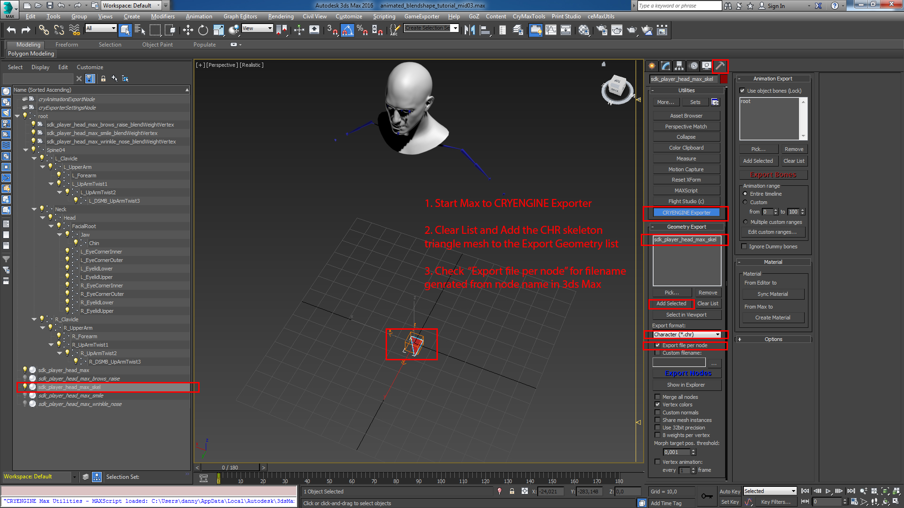
- В следующем файле мы хотим записать фактическую сетку со скинами с помощью Morpher как файл CRYENGINE *.skin. Прежде чем добавлять сетку "sdk_player_head_max", обязательно сбросьте список экспорта геометрии в настройках средства экспорта CRYENGINE.
Pic8b: Параметры экспорта, необходимые для создания файла *.SKIN с целями морфинга.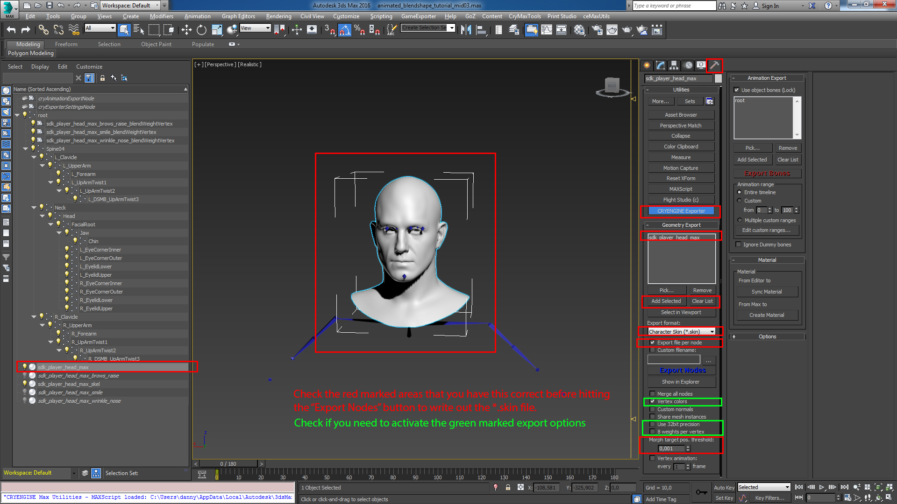
- Выведите анимацию, чтобы проверить цели морфинга с помощью скелетной анимации. Выберите имя файла «по умолчанию», позже это будет имя анимации внутри CRYENGINE. Сохрани это"по умолчанию.i_caf" файл в:
YOUR_PROJECT_FOLDER\Animation\tutorial\animated_blendshape_tutorioal\max
Pic8c: Экспорт анимации в файл *.i_caf: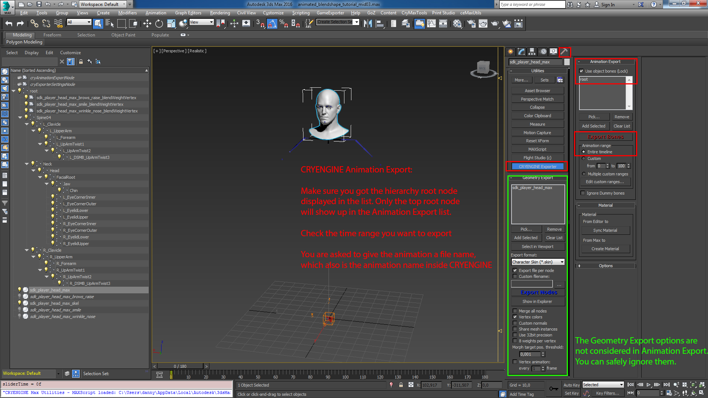
- Вы экспортировали три файла CRYENGINE: файл *.CHR, файл *.SKIN и файл промежуточной анимации *.I_CAF.
Pic9a: Два файла геометрии.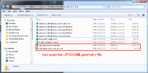
Pic9b: Один промежуточный файл анимации.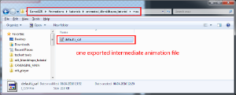
В следующем разделе руководства будет описано, как настроить экспортированные ресурсы персонажей в Character Tool от CRYENGINE.